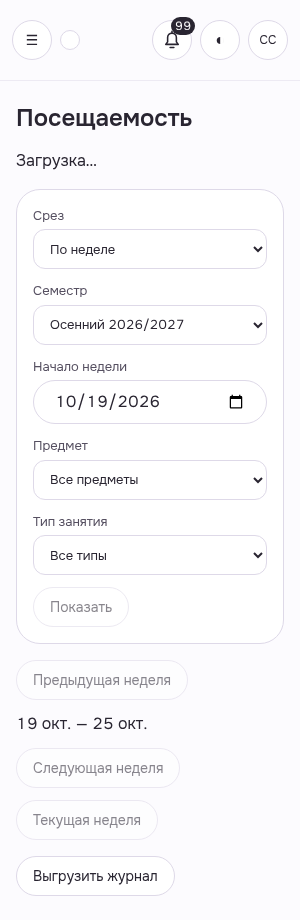
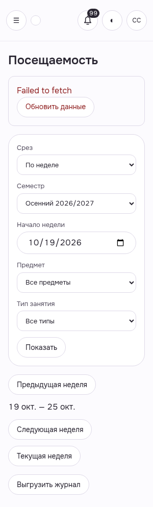
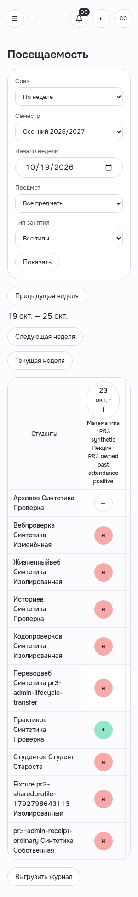
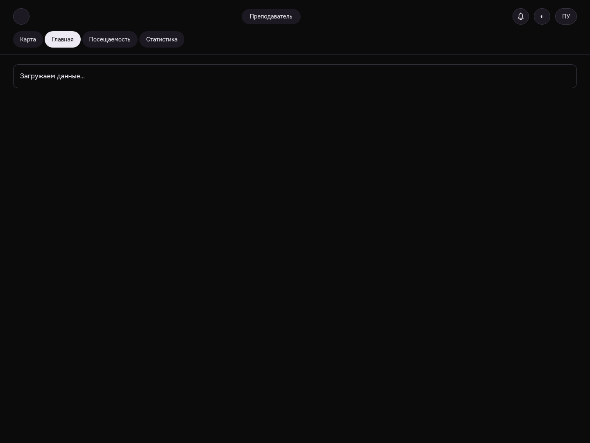
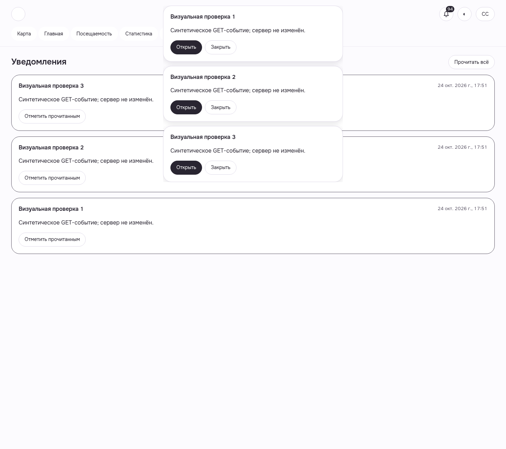
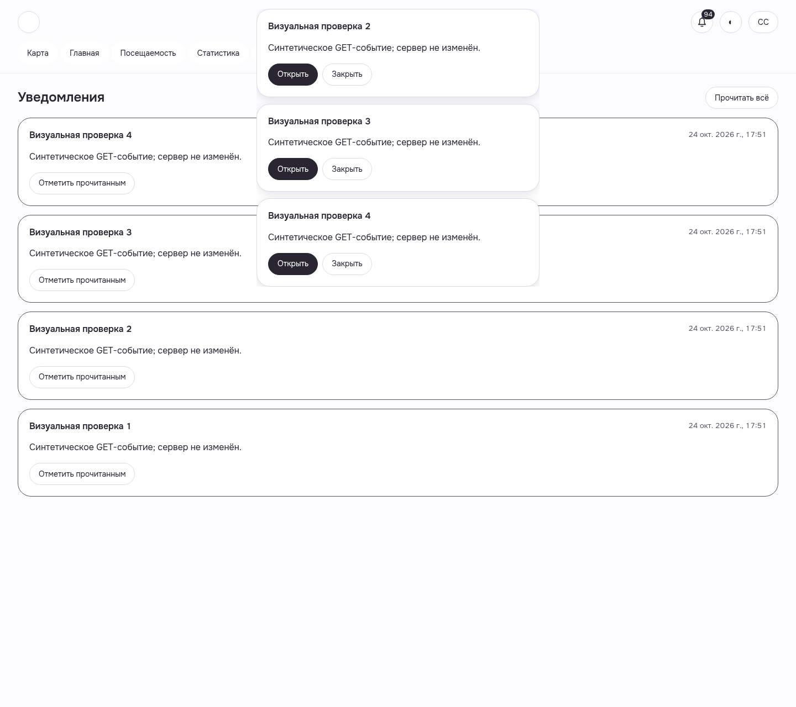
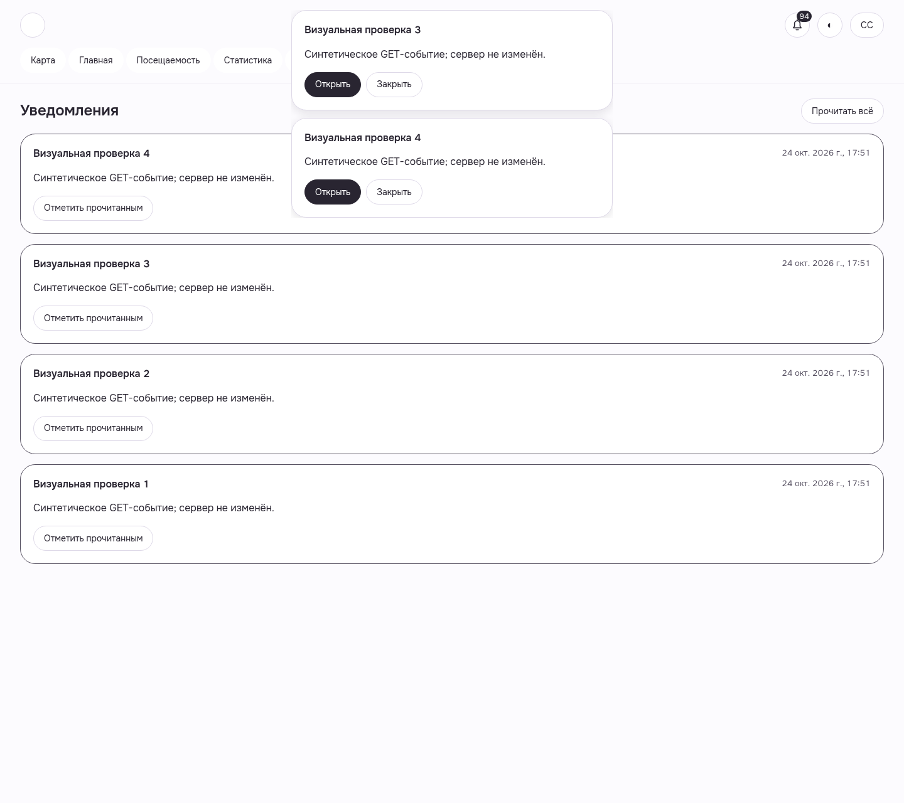
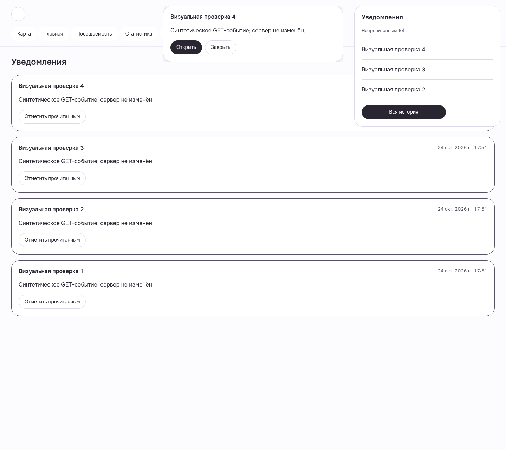

WEB-HEADMAN-JOURNAL · synthetic-loading-only
actual lessons GET held in browser; server untouched
WEB-HEADMAN-JOURNAL__synthetic-loading-only__light__300__10d8b908a · light · 300 · revision10d8b908a

8 исходных кадров до исправления, source10d8; это подтверждение конкретных состояний и дефектов, не всей визуальной готовности. GET/lifecycle состояния синтетически вызваны только в браузере. Backend/STOMP/auth correctness не подменяются. Toast7 logout не подтверждён, exact session handle потерян; browser закрыт. Исходный FAIL сохранён. На кадре10.548s часть поздних toast ещё живёт; он не доказывает истечение всех.
Manifest · Все галереи · Приёмка и ограничения
actual lessons GET held in browser; server untouched
WEB-HEADMAN-JOURNAL__synthetic-loading-only__light__300__10d8b908a · light · 300 · revision10d8b908a

actual lessons GET aborted in browser; no backend failure claim
WEB-HEADMAN-JOURNAL__synthetic-error-only__light__300__10d8b908a · light · 300 · revision10d8b908a

normal GET restored; actual UI retry; no domain write
WEB-HEADMAN-JOURNAL__retry-restored-read-only__light__300__10d8b908a · light · 300 · revision10d8b908a

actual semester GET held in browser; server untouched
WEB-TEACHER-HOME__synthetic-loading-only__dark__1440__10d8b908a · dark · 1440 · revision10d8b908a

synthetic inbox GET; browser synthetic focus triggered actual app listener; no STOMP/backend event claim
WEB-SHARED-NOTIFICATIONS__synthetic-focus-toast-3__light__1440__10d8b908a · light · 1440 · revision10d8b908a

synthetic inbox GET; browser synthetic focus triggered actual app listener; no STOMP/backend event claim
WEB-SHARED-NOTIFICATIONS__synthetic-focus-toast-4__light__1440__10d8b908a · light · 1440 · revision10d8b908a

same synthetic GET cards retained after elapsed TTL
WEB-SHARED-NOTIFICATIONS__synthetic-focus-expiry-history__light__1440__10d8b908a · light · 1440 · revision10d8b908a

actual bell preview after synthetic GET arrivals; preview limit3 separate from toast lifetime
WEB-SHARED-NOTIFICATIONS__synthetic-focus-bell-history__light__1440__10d8b908a · light · 1440 · revision10d8b908a
